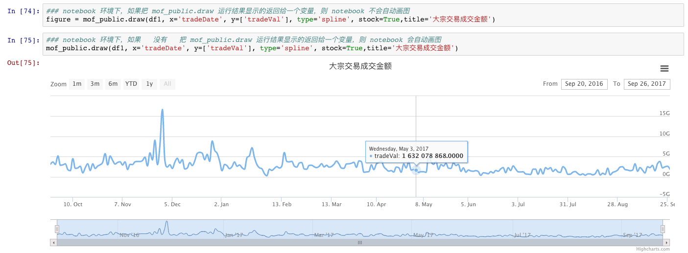

如何在 Ipython Notebook 中画动态交互图
2017-09-26
1. 写在前面
很久很久以前，我们在 python 里面画图都是用 matplotlib 这个包，当然现在好像也还在用它，不过我一直以来都不太喜欢这种方式，因为 matplotlib 画出来的图都是静态图片，虽然做简单的展示没什么压力，但是图形复杂后就不方面了，比如说下面这些场景：
- 一个数据有好几千个数据点，如果想观察其中某一个区间的数据点肿么办呢？
- 同时画了好几条数据，如果只想观察其中某条数据的情况呢？
- 想鼠标 hover 上去可以看到某条数据在某个数据点上的数据值？
- 。。。
- 。。。
所以差不多两年前左右，为了既能在 ipython notebook 里做数据分析和研究，又能有个地方来做数据展示，我搞了个开源项目：Ipython Notebook
下面是一张在 github 上的项目介绍截图：

下面是在 youtube 上的 demo 视频，不要问我为什么不放 youku 的链接，因为不想在优酷的广告时间插播，哈哈。
当时这个项目做了几个月，小有成效，完全够用，但是在 2016.04 后就没有再更新过了，因为当时这个项目是为了做数据展示用的，要展示的数据是自己做量化策略的一些分析结果，然后当时因为这个项目差不多已经够用了，就没有再继续做下去，而是把更多的时间花在量化策略研究上面了。
然后在2016.04 到最近的一年多里，我发现有很多人 star 和 fork 了我这个项目，差不多从 200不到的 star 增加到近 300 个star了，说实话虽然不是很多，但是我心里还是很感谢各位捧场的朋友的。只是我个人的行事风格向来都是 只关注最核心的事，所以以后也不会再花时间在这个项目上了，并且现在我已经有了更方便快捷好用的，直接能在 ipython notebook 里画动态交互图的方案，所以其实我自己也已经弃用了这个项目了。
不过看到还有这么多人在关注这个项目，我想大家也许跟以前的我一样，很想要一种在 ipython notebook 里画动态交互图的工具和方法。所以我准备把现在自己是如何解决这个问题的方案写出来跟各位一起分享，算是感谢各位一直对这个项目的关注了。
2. 原理说明
- ipython notebook 说白了，就是一个 html 格式的文档，那既然 notebook 本身就是 html，那原理上当然也可以把一个 html 格式的图嵌入到 notebook 里。
- ipython 本身提供了一个函数，
IPython.core.display.publish_display_data这样一个内置函数，可以让用户指定输出到 notebook 中要展示的数据是什么样的。 - 所以，我们所要做的工作就很简单了：
- 需要生成一个 html 格式的图表数据
- 调用
IPython.core.display.publish_display_data函数把图表数据插入到 notebook 里面。
下面，我们就从要做的工作出发，分两步来完成这个工作。
3. 如果通过 python 代码来生成 html 格式的图表数据
现在最常用的动态交互图的前端框架大概有下面几个：highcharts，d3.js，nvd3.js，echarts，c3js 这几个，首先明确一点，要想通过 python 来搞一个 html 格式的交互图，肯定需要间接的通过上面这些 js 库来实现。你别跟我说你要用 python 来从 0 到 1 生成一个 html 格式的图，要不然我真的会对你五体投地~。既然如此，那就先看看 google 大法，分别搜搜 python highcharts，python d3.js 啥的，看看有没有前人已经把轮子造好了。
果不其然，网上已经有不少轮子了，那接下来的工作就是众水三千，看你用哪个瓢了，哦，不对，是看你喝哪一瓢了~
最后我选的是 highcharts 的一个实现，https://github.com/arnoutaertgeerts/python-highcharts，原因有几点：
- highcharts 有个孪生兄弟 highstock，专门用于画股票行情 k 线的，非常不错，很适合我自己的应用场景
- 我们项目用来画图的库就是 highcharts，有大神在，出问题了可以秒问，省时省力
- 这个库的接口看起来很简单，人家写的例子也不错，入手快：http://nbviewer.jupyter.org/github/arnoutaertgeerts/python-highcharts/blob/master/Tutorial.ipynb
ok，其实找到这个库之后，基本上就完成大半工作了，只需要把这个库针对数据分析，展示的场景再优化优化就可以了，所以接下来，我算是站在巨人的肩上，做了两件小事：
- 优化了接口，专门适配 pandas dataframe 的数据格式
- 结合 ipython notebook 场景，包装了
IPython.core.display.publish_display_data函数
下面分开来说：
3.1 dataframe + charts
都是简单的活儿，直接看核心代码咯，别跟我说看不懂代码，曾经一个同事要求跟我开发一个 module，结果尼玛他一个星期都看不懂千来行的代码，还让我给他画架构图，WTF~~~
def draw(df, x, y, title=None, **kwargs):
"""核心画图代码，传入 dataframe，和相关的配置，返回图表对象，在 notebook 场景下可直接展示
该函数包装了 charts 包的一个接口，使之更方便的适配 pandas dataframe 数据结构
参数：
df：dataframe 数据结构
x(int / str)： x 坐标轴，必须是传入的 df 的某一个 column
y(list)： y 坐标轴，必须在传入的 df 的column中出现
title：图表名字
kwargs：可选参数，默认都是 charts 支持的参数，如：
x_type: x 坐标轴的数据类型，默认是 datetime 类型
x_labels: 可自定义 x 坐标轴的 label 内容
subtitle: 子标题内容，可以显示一些图标的统计指标
width: 图表宽度
height: 图表高度
options: 图表 options，不常用，可以直接参考源码中的默认配置
返回：
charts 的图表对象，在 notebook 中可以直接运行展示
"""
my_options = copy.deepcopy(options)
title = title if title else str(y)
my_options['title']['text'] = title
tmp = df[[x] + y]
x_type = kwargs.pop('x_type') if 'x_type' in kwargs else 'datetime'
x_labels = kwargs.pop('x_labels') if 'x_labels' in kwargs else None
subtitle = kwargs.pop('subtitle') if 'subtitle' in kwargs else ''
if x_type == 'datetime':
tmp.set_index(x, inplace=True)
tmp.index = tmp.index.to_datetime()
else:
my_options['xAxis']['type'] = x_type
my_options['xAxis']['categories'] = df[x].tolist()
if x_labels:
my_options['xAxis']['categories'] = x_labels
if 'options' in kwargs:
my_options.update(kwargs.get('options'))
kwargs.pop('options')
if 'width' in kwargs:
my_options['width'] = kwargs.get('width')
if 'height' in kwargs:
my_options['height'] = kwargs.get('height')
if subtitle:
my_options['subtitle']['text'] = subtitle
return charts.plot(tmp, options=my_options, show='inline', display=y, **kwargs)ok, 到此，从 dataframe 到动态图表已经搞定了，接下来是如何结合到 ipython notebook 中，其实，上面几乎已经完成大半了，因为如果这个画图函数是在 notebook 中的单元格里最后运行的一个函数，且没有把返回结果显示的赋予一个变量的话，notebook 会默认展示函数输出的结果的。比如下面截图：

3.2 charts to ipython notebook
上面截图里，我们把图表对象放到一个变量 figure 里了，这个 figure 变量有个属性：figure.data，里面存储的就是字符串格式的 html 格式的图表源码，so 那就简单多了，直接复用函数就搞定了： lambda figure: IPython.core.display.publish_display_data({‘text/html’: figure.data})
def print_html(html_text):
"""将 charts 图表的 html 数据手动展现，一般适用于循环作图的场景
"""
IPython.core.display.publish_display_data({'text/html': html_text})4. 效果展示
下面简单展示下效果，为了大家方便，我把测试数据也准备好了，所以这个 notebook 大家是可以直接下载下来运行的，我的环境是：python 2.7 + ipython 3.2.2
按照节奏，现在一般应该把源码和案例全放上来了，ok：
- mof_public.py: http://litaotao.github.io/files/mof_public.py
- demo notebook: http://litaotao.github.io/files/Dynamic%20Charts%20in%20Ipython%20Notebook.ipynb
回头再看看有木有必要提个 pr 到那哥们的 repo 里。
最后贴上我几乎天天在用的一个案例，真正实现了一键出图，哈哈：http://litaotao.github.io/files/report20170926
5. 后记
首先还是感谢各位 star 了我的项目的朋友们，下面你们可以来 star 我的博客吧，源码和demo我都放到博客下的 files 下面了。哈哈。虽然不会经常更新【经常更新就一定是好事？】，但是保证在一些场景下，绝对比以前的好用好多好多倍呢，所以快来 star 吧。
然后是想聊聊做这个项目的一些感触，现在回想，一开始做的时候超兴奋的，甚至有时候回家了还调试，特别是一边现学 html/css/js 那些东西，一边前后端结合起来调试，偶尔还有种 欲与天公试比高 的激动。不过当时做到后来，我居然开始添加一些很鸡肋的功能【比如说 sql】，当时想的是添加一个 online sql query & visualization，幸好 2016年初来了个股灾3.0，让亏了10几个点的我及时止步，我记得当时再决定是否要继续做这个 sql 工具的时候，我当时的内心独白大概是下面这样子的：
- 我最需要的是啥？
一个可以动态画图的工具。
- 我最在乎的是啥？这个工具？还是这个工具服务的对象：投资策略？
当然是投资策略了，你妹的，我搞工具干嘛~
- 那我为啥会蛋疼的相加一些炫酷的功能？
因为蛋疼，想在 github 上多攒点 star，哈哈。
- 多攒 star 重要还是研究投资策略闷声发财重要？
你妹的，这还用问吗？
- 那现在工具够用了，你还要接着瞎搞还是回来专心研究策略了呢？
好吧，我浪子回头，工具够用就行了，我要专心研究策略了。
现在，我还是很庆幸当时没有继续搞这个项目，而是把这些时间放到研究上去了，这一年多了在研究方面积累了我个人看来相当有营养的东西。
其实结合起一些经验来看，我发现大千世界真的事事向通。比如说，最近两三年关于创业很多的几本书：《创业维艰》，《精益创业》，《The One Thing》，我总结下来，其实可以简单的说：找到一个核心问题，并且找到一个能解决这个核心问题的解决方案，然后不断的把这个方案做到极致。是不是很熟悉，马上我就能在以前看过的鸡汤书里找到几句雷同的话，比如说我大新东方总教头余老师说的 “努力做到行业内的 top 20”；比如说现在的我大中华传承了几千年的经验 “360行，行行出状元”。如果这些都比较虚，那可以简单反思自己，在你买的很多东西中，不管网上网下，真实的还是虚拟的，你是因为它功能丰富买单呢？还是因为它真切的解决了你的某一项需求而付钱呢？类似的论断，我也在前段时间写的工作感悟中有提到，在这里，第八条： 工作 3 年后的一些思考【Part 3】
好像又扯了不少了，最后感谢下开发了这个 https://github.com/arnoutaertgeerts/python-highcharts repo 的哥们，的确省了我不少时间，然后也感谢各位观众们，哈哈，不要忘了给我 star 啊，哈哈哈哈～～～